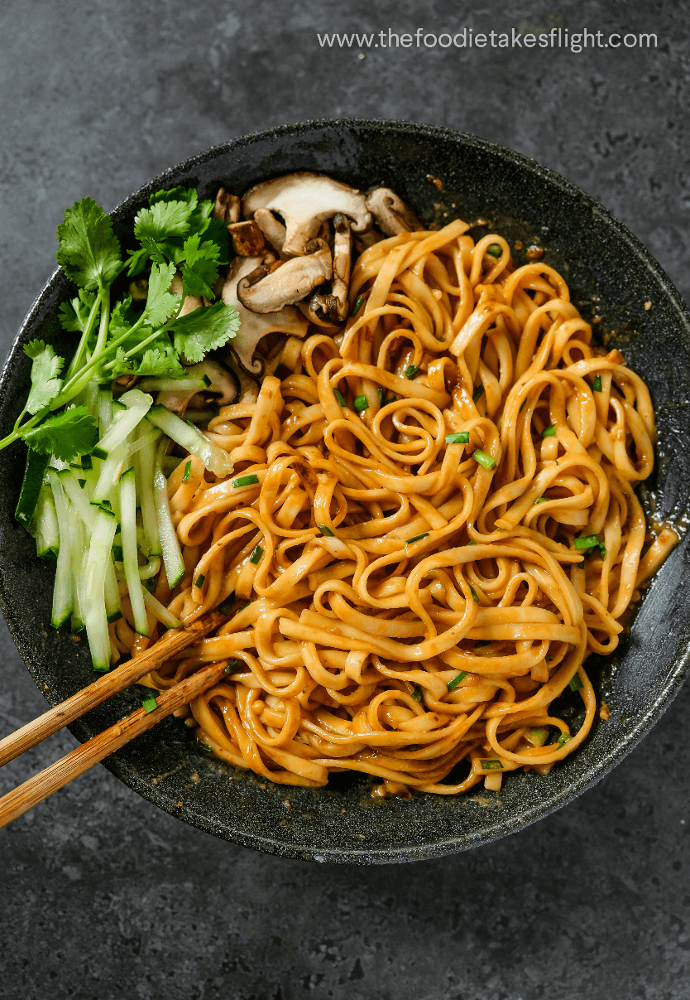

Chilli Miso Noodles

Description
Spicy Japanese noodle dish. Miso is a fermented paste that's made by inoculating a mixture of soybeans with a mold called koji
Ingriedients
- Miso paste
- Chilli Oil
- Sesame Oil
- Soy Sauce
- Rice Wine Vinegar
- Fresh garlic
- Ramen Noodles
Steps
- Make your sauce by mixing miso paste, chili oil, sesame oil, soy sauce, rice wine vinegar, garlic and warm water. Set aside.
- Next, cook ramen according to the package instructions. In a big bowl, add in your cooked ramen with a spider or tongs, bringing a tiny bit of ramen water in the bowl as well while transferring.
- Toss over your sauce and toss until it is mixed throughout.
- Toss over your sauce, add in scallions and toss until it is mixed throughout.
- Plate and Serve.